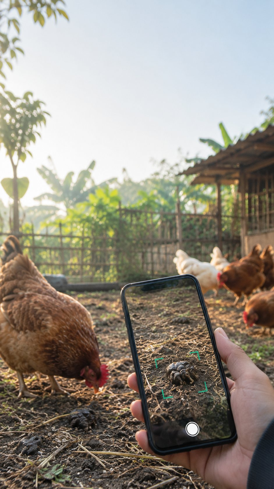

Libre para sa AndroidFree for Android
I-scan ang dumi.Scan the droppings. Makita agad ang sakit.Spot sickness early.
Ang ChickDetect ay app na sumusuri sa litrato ng dumi ng manok para malaman kung malusog ito o may palatandaan ng sakit — kahit walang internet. ChickDetect is an app that checks a photo of a chicken dropping to tell whether it looks healthy or shows signs of disease — even offline.
“Mas madaling pigilan ang sakit kapag maaga itong nakita.” “Disease is easier to stop when it is caught early.”
Nasa computer ka?On a computer? I-scan gamit ang phone para i-download doon. Scan with your phone to download there.
